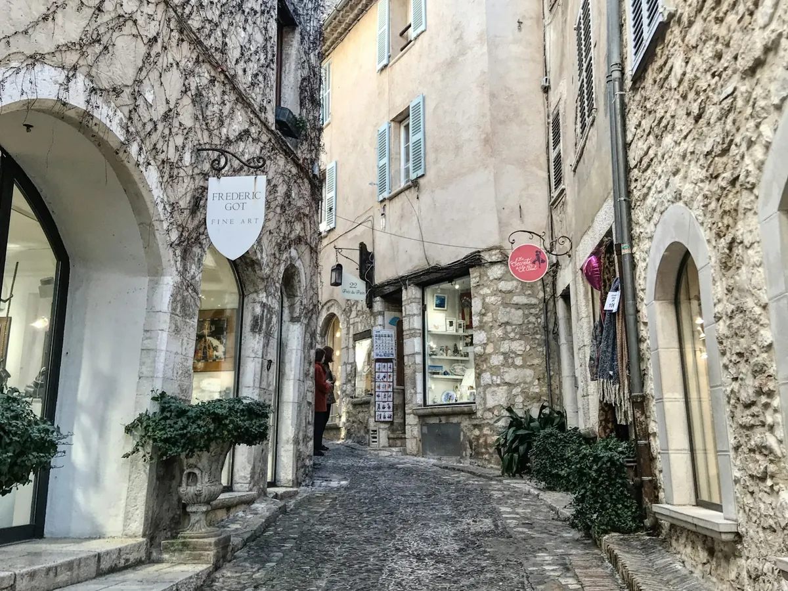
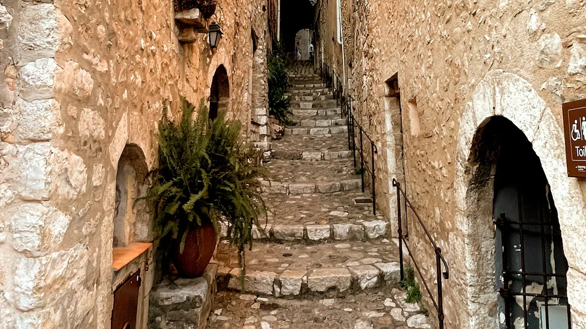
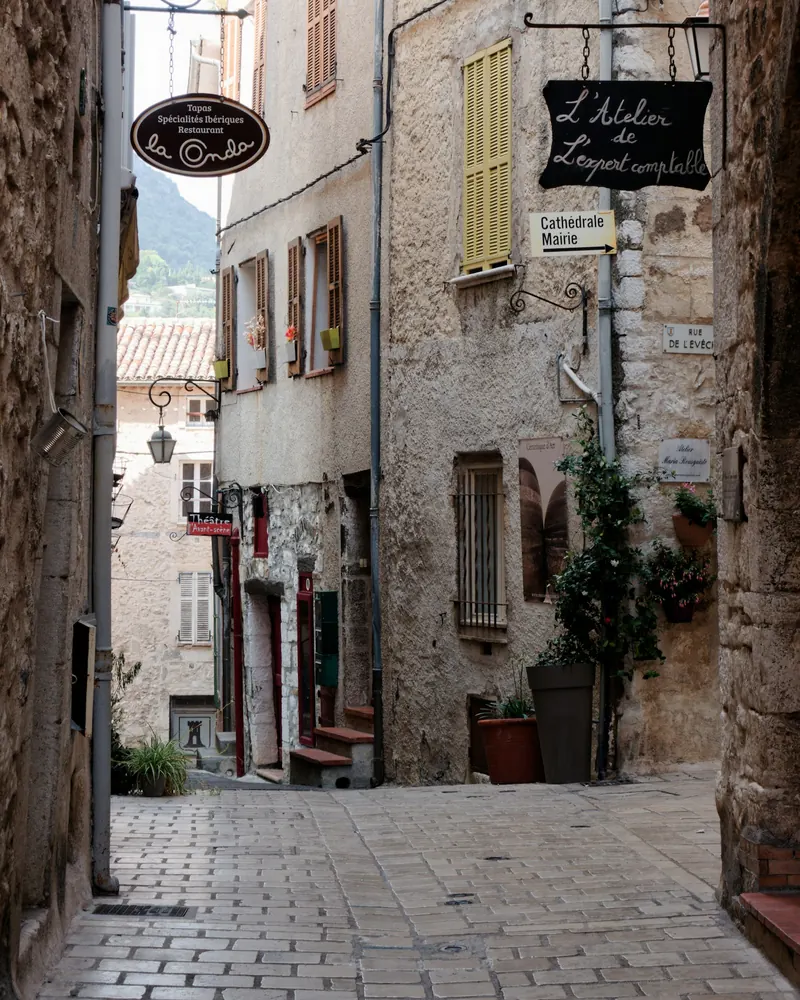

Dépannage informatique à Vence et Saint-Paul-de-Vence
Dans la cité historique comme dans les villas des collines, nous intervenons chez les particuliers, les galeries d'art, les commerces et les maisons d'hôtes de Vence et des villages voisins, à domicile ou à distance.


Particuliers à Vence
Villas sur les hauteurs, maisons de village aux murs épais, appartements du centre : nous venons chez vous pour tout remettre en ordre, et prenons le temps d'expliquer.
- Ordinateur lent, virus, mises à jour
- Wi-Fi dans toute la maison et jusqu'au jardin
- Accompagnement des seniors et cours à domicile

Commerces, galeries et maisons d'hôtes
Galeries d'art, boutiques, restaurants et maisons d'hôtes : votre activité dépend de votre informatique, surtout en pleine saison touristique.
- Maintenance des postes, caisses et imprimantes
- Wi-Fi clients séparé et sécurisé
- Messagerie professionnelle et sauvegardes
Vence et les villages voisins
Des remparts de Vence aux collines de La Gaude.
- Vence
- Saint-Paul-de-Vence
- Tourrettes-sur-Loup
- La Colle-sur-Loup
- Saint-Jeannet
- La Gaude
- Cagnes-sur-Mer
- Carros
- Villeneuve-Loubet
Nos services informatiques à Vence
Voici les interventions que l'on nous demande le plus souvent à Vence et Saint-Paul-de-Vence.
Pour les particuliers
Pourquoi choisir un informaticien local à Vence
Entre la cité médiévale, les quartiers résidentiels et les villas des collines, Vence attire autant les familles que les retraités, les artistes et les professionnels du tourisme. Tous partagent le même besoin : un informaticien joignable, qui se déplace rapidement et parle simplement.
Nous intervenons à Vence, à Saint-Paul-de-Vence, à Tourrettes-sur-Loup, à La Colle-sur-Loup et dans les villages voisins. Nous dépannons sur place ou à distance, conseillons avant tout achat, et assurons le suivi des petites entreprises qui ne peuvent pas se permettre d'arrêt en pleine saison.
- Diagnostic gratuit par téléphone
- Conseil indépendant avant tout achat
- Télé-assistance souvent possible le jour même
Informatique à Vence : vos questions
En combien de temps intervenez-vous à Vence ?
Vence est à une trentaine de minutes de Nice. Nous proposons un rendez-vous sous 24 à 48 heures, et la télé-assistance est généralement possible le jour même.
Pouvez-vous équiper une maison d'hôtes ou un gîte ?
Oui : Wi-Fi pour les clients séparé du vôtre, couverture des chambres et du jardin, et assistance à distance pendant la saison.
Accompagnez-vous les personnes peu à l'aise avec l'informatique ?
Bien sûr. Nous prenons le temps d'expliquer, à votre rythme, et proposons des séances d'accompagnement pour devenir autonome avec votre ordinateur, tablette ou smartphone.
Les galeries et commerces peuvent-ils avoir un contrat de maintenance ?
Oui. Caisse, ordinateurs, imprimantes, site et messagerie : nous assurons le suivi de votre équipement pour que votre boutique ne s'arrête jamais en pleine saison.
Intervenez-vous à Saint-Paul-de-Vence et Tourrettes-sur-Loup ?
Oui, ainsi qu'à La Colle-sur-Loup, Saint-Jeannet et La Gaude. Ces communes font partie de notre zone d'intervention principale.
Nous intervenons aussi près de chez vous
Un souci informatique à Vence ?
Appelez-nous pour un premier diagnostic gratuit et un rendez-vous rapide.